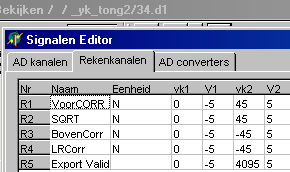
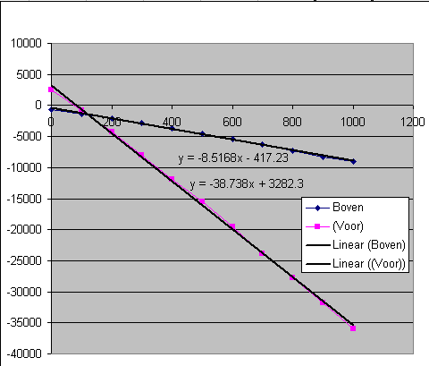

21 december 2004
(ff2) TongKrachtMeter (F81)
(Janneke Weikamp 19045)
Inleiding
Deze rekenfunktie is bedoeld ter ondersteuning van de uitlezing en analyse van de tongkrachtmeter.
De tongkrachtmeter bevat krachtsensoren in 3 richtingen, naar voren, naar links/rechts en naar onder/boven.
Helaas zijn de sensoren van voren en boven/onder sterk met elkaar gekoppeld.
Middels metingen op een trek/druk bank is deze afahankelijkheid in kaart gebracht en zijn correctie formules in deze rekenfunctie ondergebracht.
Daarnaast zorgt deze meting, tijdens de meting voor het weergeven van de (gecorrigeerde) numerieke waarden, en voor het nullen van de sensoren.
Display & Instel vensters
In het linkse plaatje is de weergave van de actuele waarden weergegeven. De actuele waarden zijn gecompenseerd voor de onderlinge afhankelijkheid van de sensoren. Tevens is hier het extra signaal "SQRT" weergegeven, dat een vectoriële optelling is van de kracht boven/onder en de kracht links/rechts.
In het rechterplaatje zijn de instellingen weergegeven.
Het maken van de opname
Het bekijken en analyseren van de opname
Voor oude opnamen:eerst de opname van een nieuw protocol voorzien, eerste opname van patient,
24 FysioFlex 1 opnamen
34 FysioFlex 2 opnamen,
44 FysioFlex 2 opnamen met omgekeerde sensor
Daarna markers F4 plaatsen, waar de signalen nul zijn. Dit mag eventueel meerdere maken gebeuren.
Op de plaatsen vlak na het maximum markers plaatsen
3=voor 2=boven 1=links 1=rechts
Het exporteren van de resultaten
Achtergrond informatie
Oude opnamen zijn 26? en 32, 33, 35
Nieuwe opnamen 26p,44,45,46
Oud protocol
3=voor 2=boven 1=links 1=rechts
r,v,b,l
l,r,v,b
b,l,r,v
In het nieuwe protocol
3=voor 2=boven 1=links 1=rechts
r,v,l,b
b,l,v,r
l,r,b,v zo lang en zo hard mogelijk duwen
opname 44, 45, STANDAARD, FF2
opname 34, wel FF2, maar transducer omgekeerd t.o.v. 44,45
opname 24, FF1
opname 44
opname 34

opname 24, FF1
Korrektie van de naar-voren-sensor als gevolg van de naar-boven-kracht
De ijkingen zijn uitgevoerd op de grote freesbank, met de 1 kg veerkrachtmeter.
Alle krachten zijn gemeten in grammen.
Een extra probleem doet zich hierbij voor, dat het Midac systeem een zeer vreemde meting oppikt als deze gevoed wordt uit het net. Derhalve dient tijdens de meting de portable-PC gevoed te worden uit de accus.
De metingen zijn te vinden in TONKRACHT_YK5.XLS.
IJking van de kracht naar boven, geeft de volgende grafieken voor de naar-boven-sensor en de naar-voren-sensor.

Opvallend is dat de naar-voren-sensor een niet-linear verloop vertoont, hetgeen te wijten is aan het typisch gedrag van kunststoffen. Het was beter geweest, om deze meting uit te voeren, door tussen ieder meetpunt de balasting naar nul terug te brengen.
Het blijkt ook dat de richtingscoëfficiënt zoals nu bepaald het bij patiënten minder goed doet. Dit komt omdat een patiënt maar even drukt. Daarom is gekozen de helling te bereken over de eerste twee punten. Het gevonden resultaat doet het dan beter bij patienten.
Omdat excel niet door 2 punten een grafiek wil tekenen, zijn de 2 punten eerst linear geëxtrapoleerd.
Een kracht zuiver naar voren, levert de volgende grafiek op
Dus voor de AD-waarden op de naar-voren-sensor, krijgen we nu de volgende deelformules
ADvoren,als gevolg kracht naar boven = -32.8 * Fboven + 2473
ADvoren, als gevolg kracht naar voren = 4.5 * Fvoor + 2149
De offsets hadden hier in beide gevallen gelijk moeten zijn, ook dit is te wijten aan de (reversibele) deformatie van het kunststof. Maar omdat we toch relatieve metingen doen, laten we de offset hier buiten beschouwing.
ADvoren, als gevolg van wat dan ook = 4.5 * Fvoor - 32.8 * Fboven + offset
Voor de naar voren gerichte kracht, kunnen we nu de volgende formule opschrijven:
Fvoor = ( ADvoren, als gevolg van wat dan ook + 32.8 * Fboven + offset ) / 4.5
Nu kunnen we Fboven uitdrukken in ADboven,
ADboven = -8.5 * Fboven - 417
Dit alles combinerend, levert de volgende uitdrukking voor de "juiste" kracht naar voren
Fvoor = (ADvoor / 4.5) + (32.8 / (4.5*8.5) * ADboven + offset
hetgeen ook te schrijven is als
Fvoor = (ADvoor / 4.5) + (ADboven / 1.2) + offset
Het kalibreren van de naar voren gerichte kracht is niet zo eenvoudig, kijk maar eens naar het volgende plaatje.
Hierin is te zien dat de naar-boven-sensor niet nul blijft, maar enerzijds een hoop ruis bevat en anderzijds toch langzaam meeloopt. Dit heeft o.a. tot gevolg dat het gecorrigeerde naar-voren-signaal veel ruisiger is dan het het ruwe naar-voren-signaal.
Het tweede probleem is dat we een meetfout introduceren, ....
Kalibratie Midac, in grammen
Rechts-ruw 0 / -5 / -630 / 5
Boven-ruw 0 / -5 / -482 / 5
Voren-ruw 0 / -5 / 910 / 5
Rechts** 0 / -5 / 4095 / 5
Boven** 0 / -5 / 4095 / 5
Voren** 0 / -5 / 4095 / 5
Kalibratie Midac, in Newton
Rechts-ruw 0 / -5 / -6.17 / 5
Boven-ruw 0 / -5 / -4.72 / 5
Voren-ruw 0 / -5 / 8.92 / 5
Rechts** 0 / -5 / 40.1 / 5
Boven** 0 / -5 / 40.1 / 5
Voren** 0 / -5 / 40.1 / 5
Marker 1 = Kracht naar Rechts / Links
Marker 2 = Kracht naar Boven
Marker 3 = Kracht naar Voren
Marker 4 = Nulpunt
Eventueel marker Links Rechts apart ??
De kracht wordt telkens gemeten t.o.v. het laatste nulpunt.
Er kan dus meerdere malen een nulpunt worden gezet.
Voorbeeld pat=44, eerste opname